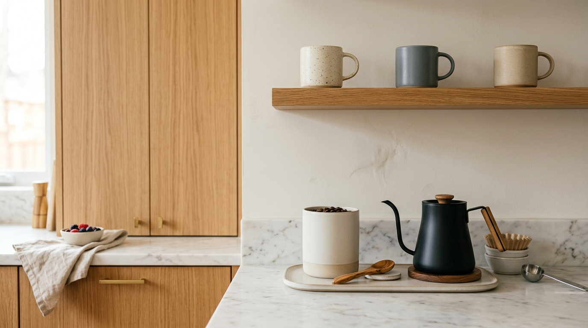

Your kitchen may not actually need more storage. It may simply be difficult to put things away.
It is a familiar cycle in almost every home: on Sunday night, the kitchen looks immaculate. Countertops are wiped down, the dish drainer is empty, and every cabinet door is closed. But by Wednesday evening, everyday items slowly begin colonizing flat surfaces:
- The olive oil bottle stays parked on the countertop next to the stove
- Clean cutting boards lean precariously against the backsplash instead of returning to the lower cabinet
- Coffee mugs cluster around the kettle because opening the cup cabinet requires dodging heavy glassware
- Food-storage containers get shoved into whichever open gap exists, creating a precarious tower of mismatched plastic
When counters repeatedly gather clutter, our instinct is to assume we lack cabinet capacity or that we need an elaborate set of matching acrylic bins. But in reality, clutter is rarely a lack-of-space problem.
Clutter is a symptom of friction. When putting an item away requires even two seconds of extra effort, your brain naturally chooses to leave it on the counter.
The goal of sustainable kitchen organization is not to design an ornamental showroom that looks impressive on social media. The goal is to make the correct, tidy action effortless. Here are the 5 kitchen rules that eliminate daily friction and make putting things away feel completely natural.
Why Kitchens Become Hard to Put Away
Most kitchens are organized according to architectural convention or visual symmetry rather than human movement. We place glasses together on high shelves because they match, or we hide cutting boards in the furthest corner cabinet because they are bulky.
Over time, these well-intentioned setups create five invisible barriers:
- Excessive Transit: Having to take four steps across the kitchen just to return a cooking spatula after stirring dinner.
- High-Friction Retrieval: Stacking plates three layers deep, meaning you must lift four heavy bowls just to get one salad plate.
- Ambiguous Zones: Drawers that serve three different functions simultaneously, causing hesitation about where an item truly belongs.
- Capacity Overcrowding: Cabinets packed to 100% capacity, forcing you to use two hands to wedge an item back into place.
- Fantasy Planning: Organizing around gourmet recipes you prepare twice a year instead of the simple routines you repeat every day.
The moment an organization system demands deliberate willpower after a long workday, the system fails. To build a kitchen that resets effortlessly, we must align our storage with real behavioral mechanics.
Rule #1 — Keep Frequently Used Items Easy to Reach
Everyday items should live in your kitchen's prime ergonomic real estate: between knee and eye level, on open unblocked shelves, or in top pull-out drawers.
The Core Principle:
DAILY USE → SIMPLE RETURN. Convenience is the bedrock of a sustainable home. If returning an everyday item requires reaching on tiptoes or crouching to the back of a dark cabinet, it will stay on your counter.
Why It Works
You interact with everyday items dozens of times per week. When an everyday tool has zero physical barriers—no latches to undo, no second-row reach, and no stacking hurdles—returning it becomes a subconscious micro-action that happens in half a second.
What This Looks Like
- Everyday Tableware: The 4–6 dinner plates, cereal bowls, and drinking glasses your household uses daily sit on the lowest, easiest-to-reach upper cabinet shelf.
- Active Cookware: The primary 10-inch skillet and medium saucepan live in the top rack of your lower pots cabinet or on an uncrowded drawer, not buried beneath roasting pans.
- Everyday Prep Tools: Your favorite chef's knife and primary wooden spoon reside in an uncrowded drawer divider right next to your cutting board.
- Daily Pantry Essentials: Cooking oil, kosher salt, and black pepper sit in an unblocked tier right at the prep station.
Try This
Identify the 5 kitchen items your household touches every single day. Relocate them into immediate, unblocked shelf or drawer space so you can grab and return each one with a single fluid motion.
For more on organizing cabinets by physical accessibility, read our complete guide to kitchen cabinet organization.
Rule #2 — Store Things Where the Task Happens
Items should live at the exact physical location where the task takes place—not tucked away in a distant cabinet simply because that is where they "traditionally" go.

The Core Principle:
USE → RETURN. Point-of-use placement minimizes the physical distance between where an item does its job and where it rests.
Why It Works
Every foot of physical separation between where you use an item and where it lives adds friction. If finishing a pot of soup requires carrying the ladle 6 feet across the kitchen to a distant drawer, you are far more likely to leave it on the stovetop spoon rest until tomorrow. When storage is adjacent to the task, putting it away requires zero extra steps.
What This Looks Like
- The Cook Station: Spatulas, tongs, ladles, and everyday cooking oils live directly beside or beneath the stovetop.
- The Morning Coffee/Tea Station: Mugs, tea bags, coffee beans, and sweetener live on the shelf directly above the kettle or espresso machine.
- The Prep Station: Cutting boards, peelers, and mixing bowls sit directly beneath the primary countertop prep area.
- The Clean-Up Station: Dishcloths, sponges, dishwasher pods, and trash bags live directly under or adjacent to the sink.
Try This
Notice the item you walk furthest across the kitchen to retrieve during dinner prep. Move that single item into the drawer or cabinet right next to your prep surface.
To see how point-of-use habits prevent counter piles, see the last-step rule for kitchen counter organization.
Rule #3 — Give Each Space One Clear Purpose
A storage zone becomes easier to maintain when its job is unmistakable. When a drawer or cabinet has an ambiguous purpose, it quickly deteriorates into a temporary clutter repository.
The Core Principle:
ONE SPACE → ONE JOB. When a shelf or drawer has a singular, well-defined purpose, deciding where to put something takes zero cognitive effort.
Why It Works
Hesitation is the enemy of organization. If you open a drawer and see measuring spoons, rolls of aluminum foil, flashlight batteries, and takeout menus mixed together, your brain cannot process where a clean whisk belongs. When boundaries are clear, the home for every item is obvious to everyone in the household.
What This Looks Like
- The Prep Drawer: Dedicated strictly to knives, measuring spoons, and peelers—no food wraps or spare keys.
- The Leftover Zone: One specific shelf dedicated exclusively to food-storage containers and matching lids.
- The Baking Shelf: Flours, sugars, and baking powders grouped on one designated shelf, separate from general savory pantry goods.
- The Cleaning Caddy: Sponges and sprays kept in one portable bin under the sink, leaving the rest of the cabinet clear.
Try This
Open your most frustrating kitchen drawer. Give it one clear title (e.g. "Cooking Utensils Only"). Remove every item that does not fit that title and relocate them to their proper categories.
For smart tips on establishing clear under-sink zones, check out under-sink kitchen storage hacks.
Rule #4 — Leave Room to Put Things Back
Storage should never be packed to 100% capacity. If getting an item out or putting it back requires playing Tetris, the system will break down within days.
The Core Principle:
EASY TO REMOVE → EASY TO RETURN. A sustainable kitchen maintains 15% to 20% open breathing room on active shelves and in drawers.
Why It Works
When cabinets are packed edge-to-edge, putting away a clean pan requires two hands: one hand to lift three heavier pans, and one hand to slide the pan into the middle of the stack. After cooking dinner, no one has the patience for multi-step physical hurdles. Leaving intentional breathing room enables effortless, one-handed returns.
What This Looks Like
- Unstacked Cookware: Storing skillets vertically in a rack or limiting stacks to two pans so you never have to unstack four layers to return dinner cookware.
- Breathing Room on Shelves: Leaving 2–3 inches of clear space between your drinking glasses and coffee mugs so hands don't accidentally knock glassware when returning cups.
- Drawer Headroom: Avoiding overfilling utensil drawers so spatulas don't catch on the upper cabinet frame when opening and closing.
- Open Counter Margins: Keeping a 2-foot landing buffer open beside the sink and cooktop rather than covering every square inch with appliances.
Try This
Go to your dinnerware cabinet and remove the 2–3 pieces you rarely or never use (such as promotional mugs or odd extra bowls). Notice how much lighter and easier it feels to slide everyday plates back into place.
To avoid overcrowded counter pitfalls, explore our breakdown on 5 kitchen organization mistakes making your kitchen feel smaller.
Rule #5 — Organize for How You Actually Cook
The best kitchen organization system is designed around your real, everyday habits—not an aspirational lifestyle from an interior design catalog.
The Core Principle:
REAL HABITS → REAL STORAGE. Storage should support the way you actually live on an ordinary weeknight, not how you cook on Thanksgiving.
Why It Works
Many people dedicate prime countertop space to heavy stand mixers, bread makers, or fondue sets that they only touch a couple of times a year. Meanwhile, the cutting board, blender, and sheet pans used every single night are shoved into awkward, distant cabinets. When your physical space mirrors your actual weekly routine, putting things away becomes second nature.
What This Looks Like
- Daily Rituals First: If you brew coffee and make toast every single morning, that coffee maker and toaster deserve the most accessible counter space.
- Occasional Tools to the High Shelf: If you only bake cookies during holidays, cookie sheets, rolling pins, and cake pans belong on the highest, least accessible cabinet shelf.
- Honest Appliance Placement: Storing rarely used specialty appliances in a high cabinet or closet rather than letting them crowd daily prep zones.
- Realistic Leftover Storage: Keeping only the 5–6 food containers you actively use in easy reach, while tucking oversized party platters into deep storage.
Try This
For the next 48 hours, observe which three items repeatedly end up left out on your kitchen counters. Don't feel guilty about them—simply ask yourself: "Where does this item naturally want to live based on how I actually use it?" Then adjust its home accordingly.
For smart strategies on storing large countertop items, see our guide on how to organize small kitchen appliances without losing counter space.
The 5-Rule Kitchen Organization Check
Before purchasing new organizers or rearranging your cabinetry, run your kitchen through this simple 5-rule diagnostic checklist:
The Maintainability Diagnostic:
- □ Rule 1 — Easy to Reach: Are the 5 items you touch every day located between knee and eye level without requiring step stools?
- □ Rule 2 — Point of Use: Are cooking tools beside the stove, prep knives at the board, and coffee mugs near the kettle?
- □ Rule 3 — Clear Purpose: Does every drawer and cabinet shelf have one clear, single-category job?
- □ Rule 4 — Room to Return: Is there at least 15% breathing room on active shelves so returning an item takes one smooth motion?
- □ Rule 5 — Real Habits: Does your layout reflect the meals you actually cook on an ordinary Tuesday night?
Tip: If two or more boxes are unchecked, fix the placement and flow of your system before spending money on additional storage products.
A Simple Kitchen Reset Using These Rules
You can transform your kitchen's daily maintainability in under 30 minutes using this step-by-step reset process:
- Notice What Stays Out: Walk into your kitchen and take inventory of the 3–5 items currently stranded on the counters.
- Locate Where the Task Happens: Identify exactly where each stranded item is physically used during daily routines.
- Move Items Closer: Clear a drawer or shelf immediately adjacent to that task area and relocate the item there.
- Assign One Clear Purpose: Relabel or mentally define that shelf's role (e.g., "Daily Coffee & Tea Supplies").
- Remove Friction Points: Pull out rarely used, bulky items that are crowding that zone and move them to higher or deeper storage.
- Build in Breathing Room: Ensure there is enough clearance to put the item back with one hand without bumping neighboring dishes.
- Test During Normal Use: Cook your next meal and notice whether putting things away feels effortless.
- Adjust Based on Behavior: If an item still ends up left out, don't force a rigid habit—simply refine its home until the friction disappears.
For more everyday maintenance habits that keep flat surfaces calm, explore our guide on how to keep kitchen counters clear with the next-action rule.
When You Actually Need More Storage
While most kitchen clutter can be resolved through smarter grouping and point-of-use placement, there are scenarios where physical storage capacity is genuinely limited:
- Extremely Limited Rental Cabinetry: Compact studio apartments that only have two lower cabinets and zero pantry space.
- Awkward Vertical Gaps: Cabinets with fixed, unusually tall shelves where vertical space is completely wasted.
- Unusable Deep Corner Cabinets: Dark, blind corners where items get lost and cannot be reached without crawling on hands and knees.
- Missing Drawer Divisions: Wide, shallow drawers where utensils naturally slide into a chaotic tangle whenever the drawer opens.
The key is to identify the specific spatial friction point first. Once you know why an item is hard to return, you can introduce a targeted, minimal tool to solve that exact issue.
Optional Product Support
If you have reorganized your kitchen around the five rules and find that you have a structural bottleneck, these simple, renter-friendly tools can help make returns even easier:
Expandable Wire Cabinet Shelf Risers
A sturdy, non-permanent shelf riser that divides tall cabinet shelves horizontally into two accessible levels.
- Doubles usable vertical shelf space without drilling
- Eliminates unstacking heavy ceramic dishes
- Adjusts in width to fit narrow or wide apartment cabinets
Non-Slip Kitchen Turntable (Lazy Susan)
A smooth-spinning 360-degree rotating tray with high rimmed edges and non-slip rubber lining.
- Brings deep cabinet items to the front with a gentle spin
- High rim prevents bottles from tipping over
- Compact footprint fits inside standard upper cabinets
Adjustable Bamboo Drawer Dividers
Spring-loaded natural bamboo dividers with rubber grip ends that create custom segmented channels in any standard drawer.
- Installs in seconds with zero tools or adhesives
- Tension springs keep dividers firmly locked in place
- Eco-friendly natural bamboo aesthetic matches any kitchen
Frequently Asked Questions
Counters stay clear when every countertop item has an assigned, zero-friction home. Most counter clutter happens because putting an item away takes too many steps (such as crouching or unstacking other dishes). Make the return location adjacent to the task and leave room in the cabinet so returning the item takes under three seconds.
In kitchens with few upper cabinets, dedicate your upper storage exclusively to daily-use items (dishes, glasses, coffee). Shift heavy cookware, baking pans, and small appliances to lower cabinets or a compact freestanding baker's rack. You can also utilize magnetic knife strips or adhesive rail hooks on the backsplash to keep daily prep tools off the counters.
Deep lower cabinets are notorious for creating friction because you cannot see the back. Use deep, slide-out clear bins or pull-out wire baskets that act like drawers. When you can pull the entire container out into the light, returning items to the back becomes as easy as dropping them in.